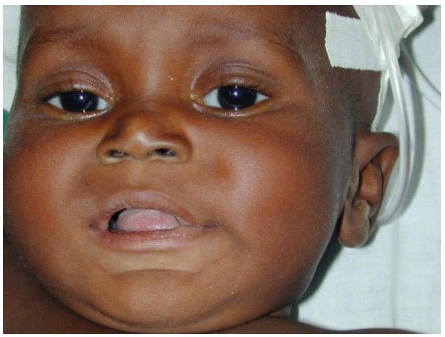

INTRODUCTION TO ETAT+ 2017

ETAT+
Emergency Triage Assessement and Treatment plus admission
EMERGENCY TRIAGE ASSESSMENT AND TREATMENT PLUS ADMISSION (ETAT+)
ETAT+ is an acronym for Emergency Triage Assessment and Treatment plus admission care of new-borns and children in the first 48 hours. (2 DAYS).
Triage-is the process of rapidly screening sick children soon after their arrival in hospital.
3 CATEGORIES OF TRIAGE
- Children with emergency signs, who require immediate emergency treatment;
- Children with priority signs, who should be given priority in the queue so that they can be assessed and treated without delay; and
- Children with non-urgent cases, who have neither emergency nor priority signs
Emergency signs include:
- obstructed or absent breathing
- severe respiratory distress
- central cyanosis
- signs of shock (cold hands, capillary refill time longer than 3 s , high heart rate with weak pulse, and low or unmeasurable blood pressure)
- coma (or seriously reduced level of consciousness)
- convulsions
- signs of severe dehydration in a child with diarrhoea (lethargy, sunken eyes, very slow return after pinching the skin or any two of these).
Children with these signs require immediate emergency treatment to avert death.
PRIORITY SIGNS:
- Tiny infant: any sick child aged < 2 months
- Temperature: child is very hot
- Trauma or other urgent surgical condition
- Pallor (severe)
- Poisoning (history of)
- Pain (severe)
- Respiratory distress
- Restless, continuously irritable or lethargic
- Referral (urgent)
- Malnutrition: visible severe wasting
- Oedema of both feet
- Burns (major)
The above can be remembered from the mnemonic 3TPR MOB.
These children need prompt assessment (no waiting in the queue) to determine what further treatment is needed. Move a child with any priority sign to the front of the queue to be assessed next.
3. Principles of ETAT+
- The ETAT+ programme is about more than identifying and treating sick new-borns and children.
- ETAT+ Requires total collaboration of health workers, care givers and the sick child by recognizing and utilizing available limited resources
- ETAT+ programme gives a structure for a rapid and comprehensive approach to initial assessment and intervention based on the acronym "ABCD"

- Some children will die waiting to be seen
- Of all the children dying in hospital >50% will die within 24 hours.
- Some children can only be saved if treatment starts immediately.
Who is most likely to die rapidly?
Who can do triage?
Anyone:
- Doctor
- Nurse
- Cleaner
- Askari
- Records Clerk
Simple tool
Used in Malawi and deaths of children were reduced.
- The ABC approach to triage.
- The ABC approach to basic life support (BLS) of a collapsed infant or child.
- The ABCD approach to provision of emergency care when there are signs of life in a neonate, infant or child.
- The ABC approach for new-born resuscitation.
Emergency Signs - A, B, C, D
If history of trauma ensure cervical spine is protected.


ASSESSMENT AND TREATMENT OF THE INFANT/CHILD WITH SIGNS OF LIFE (NON-COLLAPSED CHILD)
Welcome to this interesting section!
Before we start using the ABCD approach in these children, however, we need to check:
- Are we prepared to provide emergency care - always check where you are working that the right equipment and resources are available
- Has the child collapsed or are there clear signs of life - you may need to observe and stimulate to check for clear signs of life
- Do you need help?
- Have you considered your safety and that of the child
Signs that point to Airway Problems
FIRST LETTER A- AIRWAY (We have two signs to look for airway problem)
1. Noisy breathing. Assessment of the airway should therefore involve listening to sounds such as stridor and/or bubbling/crackling (gargling) sounds (sounds of excessive secretions at the back of the throat). Remember this should not take more than 10 seconds.
In the child who is alert and sitting with the carer then to check the airway simply stand with your head close to the child's and listen carefully - do not try to force the mouth open to look inside.
If there is severe stridor or sounds of obstruction you may need to call for expert help
2. unresponsive Child or has reduced level of consciousness should be placed on a resuscitation table/couch for further assessment and treatment.
The mouth should be opened gently and examined for the presence of secretions or foreign body.
Presence of these signs requires urgent intervention to clear the airway.
The airway may also need to be positioned either in a neutral (infants below one year) or sniffing (children above one year) position to make sure it remains clear.
Additionally, the maintenance of the airway may involve the use of the oropharyngeal (Guedel) Airways that prevent the tongue from falling back and obstructing the airway in the unconscious child.
Resuscitation A - Airway
- Is the airway clear and safe?
- At risk?
- Obstructed?
Look in the mouth
- Vomit?
- Secretions?
Position the airway
The picture shows the neutral position in an infant
2. Signs that point to Inadequate Breathing
These include:-
- Central Cyanosis and Respiratory rate:
- - Very Fast or Very Slow Respiratory rates for age
- Increased respiratory Effort
- - Grunting?
- - Head nodding / bobbing?
- - Lower chest wall indrawing?
- - Deep / acidotic breathing?
- - Symmetrical movement?
- Wheezing or crackles
- - Oxygen Saturation Pulse oximetry reading of < 90%
Amongst these, some signs indicate severe respiratory distress and may be signs of impending respiratory failure. These include central cyanosis, deep acidotic breathing, grunting and head nodding.
Presence of one or a combination of any of these signs indicates that the child may be hypoxemic and therefore needs treatment with oxygen.
Using pulse oximetry will actually allow you to measure the blood oxygen saturation and is the best way to make decisions on using oxygen as well as monitor whether the treatment is effective.
Immediate bronchodilator therapy may also be required when wheezing is noted when it is accompanied by respiratory distress.
Choosing the right size of Bag and Mask

Resuscitation B - Giving Rescue Breaths
Open / Clear the AIRWAY:
Look / Listen / Feel for BREATHING

The chest must rise well at least twice.
Simple clinical signs can be very helpful in rapidly assessing the circulatory system.
One should look out for the following signs that indicate an inadequate circulation:
- Cold hands and feet (taking into account environmental or ambient temperatures) The temperature gradient of the extremities (how far the coldness of the upper limbs and lower limbs extends upward to the elbow/knee or shoulder/hip)
- The presence / absence and character of the central pulse (brachial or carotid pulse)
- The presence and strength of the peripheral pulse should also be assessed to determine if it is weak, absent or strong.
- Pulse rate- to determine if it is too fast ( $>180 / \mathrm{min}$ in a child less than 1 year, and $>160 / \mathrm{min}$ in a child more than one year) or too slow ( $<60 /$ minute)
- Capillary refill time to determine if the refilling is prolonged $>3 \mathrm{sec}$ when the child is in a warm environment. Note it is best to count and record the actual refilling time in seconds as this can help you see if a child is getting better or worse.
- Blood pressure should also be measured - although this is not commonly done in many of our facilities in children it should be done, and done accurately in seriously ill children.
In the ETAT+ guidelines and practical we do not refer to blood pressure - but this is for practical reasons not because it is unimportant!
Presence of any one of these signs suggests an inadequate circulation. If any one of these signs is present, remember to also assess for:
- Skin turgor to determine if it takes longer than 2 seconds.
- Ability to drink (should be demonstrated as a sign by the health care worker involves actually visualizing the child drinking or breastfeeding)
- Sunken eyes (Are the eyes sunken according to the mother?)
What are the most common causes of 'collapse / arrest' in children?
- Respiratory failure
- Pneumonia
- Circulatory failure
- Severe anaemia
- Dehydration
- Septic shock.
- (Pump failure - adults and children with CHD)
Resuscitation C - Check for signs of life

Resuscitation C - Give Chest Compressions
5 Inflation breaths with Bag and Mask device
Check for Signs of Life and the Large Pulse
No Signs of Life and Absent pulse or Heart Rate, < 60 bpm
Chest compressions
15 compressions to every two B & M breaths
Aim for 6-7 cycles of 15:2 per minute
Giving Effective CPR
- $\Delta$ Lower $1 / 2$ of sternum, one finger breadth above xiphisternum
- Compress the chest by $1 / 3^{\text {rd }}$ its depth & allow for chest recoil
- Aim at a rate of 100-120 chest compressions/min
- Give 15 chest compressions:2breaths for I minute
- $\Delta$ Reassess ABC after one minute
Chest Compressions in an Infant

Chest Compressions in an Older Child

Improving circulation to prevent collapse:
The most common causes of circulatory failure in Africa?

To make decisions on use of fluids and blood we need to know:
- How severe is the circulatory problem?
- Is the problem likely to be caused by diarrhoea?
- Is there severe malnutrition?
- Is there severe anaemia?
Also note that trauma, burns, and anaphylaxis must be identified and that care may be different in a child with chronic heart disease etc
Diarrhoea with severely impaired circulation: Hypovolaemic Shock
All of the features:
- AVPU < A
- Weak / absent peripheral pulse
- Coldness of skin
- Cap Refill >3 secs
- Sunken eyes & skin pinch $\geq 2s$
20 mls/kg Ringer's Lactate over 15 mins
Severe anaemia, respiratory distress and impaired circulation

If there is severe pallor and:
- Acidotic breathing
- Respiratory distress
> $10 \mathrm{mls} / \mathrm{kg}$ Packed Cells (or 20mls/kg Whole Blood) start urgently, transfuse over 3-4 hours
Even if there is severely impaired circulation do not give bolus fluids, give maintenance fluids only before blood
Severely impaired circulation, no diarrhoea, no severe anaemia and with or without severe malnutrition

If infant / child has all of these:
- AVPU < A
- Weak / absent peripheral pulse
- Coldness of skin
- Cap Refill >3 secs
20 mls/kg Ringer's Lactate slowly
(over 2 hours - fast boluses may do harm)
Use Ringers/5% Dextrose in severe malnutrition
Fluid summary - no trauma etc
- Fast bolus of $20 \mathrm{mls} / \mathrm{kg}$ Ringers in 15 minutes is only used in diarrhoea complicated by severely impaired circulation (shock)
- Severely impaired circulation in other febrile children or in severe malnutrition is treated with $20 \mathrm{mls} / \mathrm{kg}$ Ringers over 2 hours (Ringers/5% dextrose in SAM)
- Blood is urgently requried for severe anaemia with acidotic breathing / respiratory distress
- Even if signs suggest impaired circulation (not severe) in febrile illness just give maintenance fluids
In order to determine neurological disability in relation to the child's illness, use of a simplified scale to assess the level of consciousness is recommended.
There are various scales which have been used to assess the level of consciousness in children including:
- Paediatric Glasgow Coma Scale
- Blantyre Scale
- AVPU Scale
AVPU Scale
In this unit, we will discuss the use of the AVPU scale in assessing the level of consciousness of sick children by looking at its various components:
- A = Alert and responsive. This score is given to an infant or child aware of the surrounding environment. The easiest way to confirm this is to check the infant/child can make eye contact -clearly look at you or its carer and often track any movements.
- V = (response to) voice or verbal instructions or sound. This score is given to a child who is not alert but responds to Voice or Verbal instructions, e.g. turns head to mother's call.
- P = (response to pain) this score is given to a child who is not alert, not responding appropriately to voice but responds to Pain appropriately. It is important to assess the response to pain carefully.
- U = failure of an infant or child to elicit any of the responses described above is deemed as Unresponsive or Unconscious and scored as U.
Rapid Assessment of the seriously sick Non Collapsed Child
Approach to the non-collapsed child involves:
- Quickly observing your safety and the safety of the child while at the same time observing if the child is alert by looking for eye contact/directed eye movements
- Placing the child in the optimal setting to carry out the assessment
- Shouting for help, when the child is identified as not being alert or having a serious problem.
- Quickly and sequentially assess:-
- Airway for patency and position;
- Breathing for its adequacy and the need for oxygen therapy;
- Circulation for its adequacy and immediate treatment for severely impaired circulation (shock) if present;
- Disability using AVPU scale and possible treatment with 10% dextrose if not alert. .